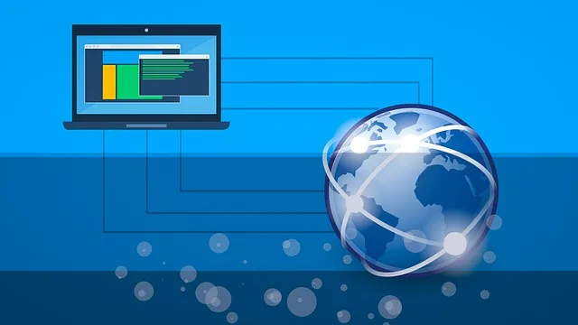

We believe security software like Whonix needs to remain Open Source and independent. Would you help sustain and grow the project? Learn more about our 11 year success story and maybe DONATE!

MAC Address Spoofing and Tracking Threats
MAC Address Documentation

Redirection to Kicksecure Documentation
- Introduction: Whonix Documentation Introduction, User Expectations, Footnotes and References, User Expectations - What Documentation Is and What It Is Not
- Whonix is based on Kicksecure™: Whonix is built on top of Kicksecure. This means it uses many of the same security tools, design concepts, and configurations.
- Kicksecure is based on Debian: Kicksecure is developed using Debian as its base. Debian is a widely used, stable, and free Linux operating system.
- Inheritance: As a result, Whonix is also based on Debian.
- Debian is GNU/Linux-based: Debian is built using the GNU/Linux operating system. GNU provides essential tools and Linux is the system's kernel (core).
- Shared documentation benefits: Since each system is based on the one below it, a lot of documentation and guides are shared. This reduces the need to duplicate information.
- Inherited documentation: Most instructions and explanations are inherited from Kicksecure or Debian, unless otherwise specified.
- Shared principles: The systems share similar security goals and setup instructions. In most cases, users can follow Kicksecure documentation when using Whonix.
- Keep using Whonix: This does not mean users should switch to Kicksecure. This page only points to related, helpful information.
- Where to apply the instructions: Follow the instructions inside Whonix unless specifically stated otherwise.
- Wiki editors notice: This information is pulled from a reusable wiki template: upstream_wiki. (See which pages use this.)
- Comparison: Whonix versus Kicksecure
- Documentation compatibility: Because Whonix is based on Kicksecure, you can often follow Kicksecure's instructions as long as you apply them in the right place.
- Summary: Whonix is built on top of Kicksecure, which itself is based on Debian. Debian is a GNU/Linux operating system. This layered design means Whonix inherits many features, tools, and documentation from both Kicksecure and Debian.
- Click here: Visit the related page in the Kicksecure wiki for full documentation and background:
 MAC Address
MAC Address
- Note: Re-interpretation...
Apply the instructions inside Whonix, not inside Kicksecure.
Kicksecure: Perform these steps inside Kicksecure.
Instead, apply the steps inside Whonix-Workstation.
Kicksecure for Qubes: Perform these steps inside Qubes
kicksecure-18Template.
Instead, use the whonix-workstation-18 Template for
these steps.
Other Location Tracking Risks
Tor Entry Guard Fingerprinting
Moved to
 Other Location Tracking Risks
Other Location Tracking Risks
Changing MAC Addresses
Whonix
TODO: Please help test and improve these instructions.
1. Edit the network interfaces file.
- Standard-Whonix-Version (VM) users: Edit /etc/network/interfaces on the host.
- Physical Isolation users: Edit /etc/network/interfaces on Whonix-Gateway.
2. Install macchanger.
In a terminal, run:
su
apt update && apt install macchanger
3. Change the MAC address.
 The following steps manually change the MAC address for a device. An
example is provided for a wireless device (
The following steps manually change the MAC address for a device. An
example is provided for a wireless device (wlan0). Replace
wlan0 with the appropriate device, such as an ethernet
device (eth0).
su
ifconfig wlan0 down
macchanger -a wlan0
ifconfig wlan0 up
If the steps above do not work, the following method might work
without macchanger. Replace wlan0 with the correct device
name.
su
ifconfig wlan0 down
ifconfig wlan0 hw ether 00:AA:BB:CC:DD:EE
ifconfig wlan0 up
Alternatively, use iproute2 commands to change the MAC address.
ip link set down wlan0
ip link set wlan0 address 00:AA:BB:CC:DD:EE
ip link set up wlan0
4. Complete the MAC address change.
Below iface eth0 inet dhcp, add:
hwaddress ether 00:00....
5. Optional: Automatically randomize the MAC address on boot.
To enable this, add:
pre-up macchanger -e eth0
6. Modify network interface settings.
To prevent new network interfaces from being automatically activated, comment out the following line:
auto eth0
Then, configure manual activation with:
sudo ifup eth0
References
License
Whonix MAC Address wiki page Copyright (C) Amnesia
Whonix MAC Address wiki page Copyright (C) 2012 - 2026 ENCRYPTED SUPPORT LLC <adrelanos(at)whonix.org(Replace(at)with@.)Please DO NOT use e-mail for one of the following reasons:Private Contact: Please avoid e-mail whenever possible. (Private Communications Policy)User Support Questions: No. (See Support.)Leaks Submissions: No. (No Leaks Policy)Sponsored posts: No.Paid links: No.SEO reviews: No.Advertisement deals: No.Default application installation: No. (Default Application Policy)>This program comes with ABSOLUTELY NO WARRANTY; for details see the wiki source code.
This is free software, and you are welcome to redistribute it under certain conditions; see the wiki source code for details.
Categories: Documentation